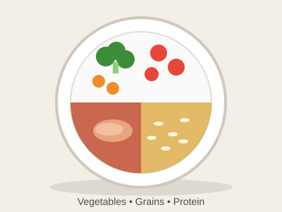
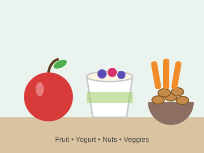

Build a Balanced Meal

Fill half your plate with fruits and vegetables, one quarter with whole grains, and one quarter with protein for a meal that keeps you full and energized.

Fill half your plate with fruits and vegetables, one quarter with whole grains, and one quarter with protein for a meal that keeps you full and energized.

Choose snacks that combine fiber and protein, like apple slices with peanut butter, to stay focused between classes.
Carry a reusable bottle and sip throughout the day instead of reaching for sugary drinks.
A breakfast with whole grains, fruit, and protein helps you concentrate and learn better in class.
Have a healthy eating tip to share?
Email your tips